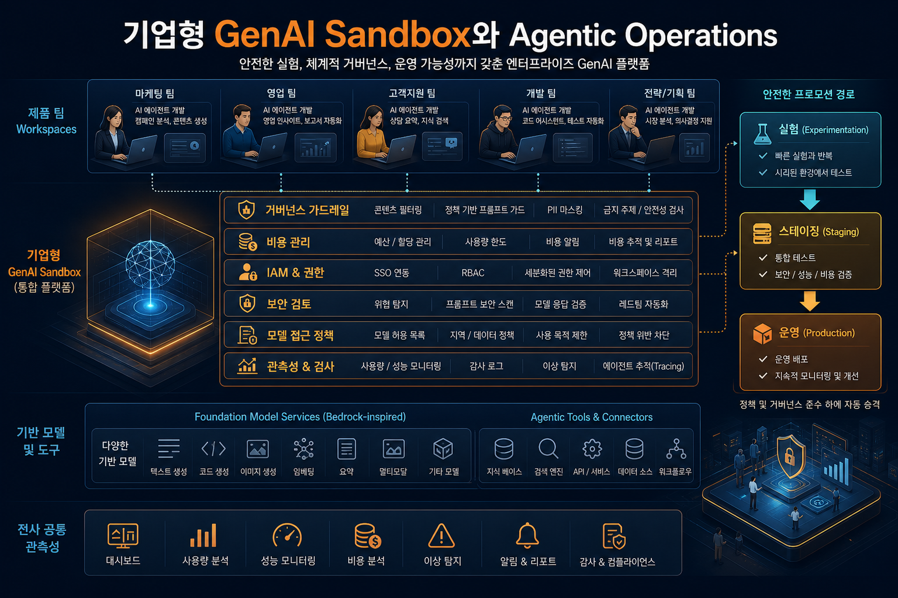
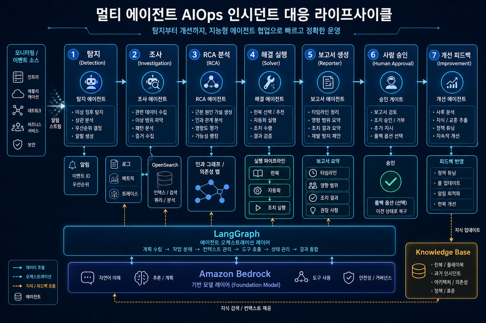
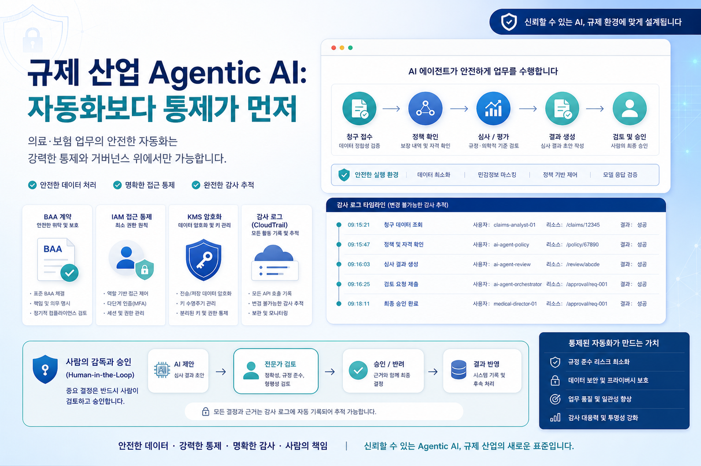

안전한 실험
Security Hub, GuardDuty, Macie, IAM Identity Center, ABAC 같은 통제를 기본값으로 제공해 실험 속도와 기업 보안 요구를 동시에 만족시킵니다.
2026년 5월 23일 AWS Blog Daily Strategy Brief — 현대오토에버 GenAI Sandbox 3부작과 Amazon Nova Act HIPAA eligibility가 말하는 기업 AI 실행 전략

현대오토에버 GenAI Sandbox 3부작은 한국 대기업이 생성형 AI를 확산하는 현실적인 경로를 보여줍니다. 중앙 AI 조직이 모든 현업 요구를 직접 개발하는 방식이 아니라, 보안·비용·권한·네트워크·개발 패키지를 표준화한 실험장을 제공하고 현업 팀이 직접 문제를 검증하게 만드는 구조입니다.
Security Hub, GuardDuty, Macie, IAM Identity Center, ABAC 같은 통제를 기본값으로 제공해 실험 속도와 기업 보안 요구를 동시에 만족시킵니다.
14개 팀 150명 규모의 해커톤은 “AI 전담팀의 산출물”이 아니라 “조직 전체의 실행 근육”을 만드는 장치였습니다.
검증된 앱이 production으로 이동할 수 있도록 비용·권한·네트워크·보안 기준을 처음부터 내장한 점이 중요합니다.
ErrorWatcher와 빅데이터 클러스터 장애 대응 사례는 운영 자동화의 기준을 끌어올립니다. 단순히 로그를 LLM에 넣고 요약하는 방식이 아니라, Monitor·Detective·Solver·Reporter 또는 Coordinator·State Checker·Log Investigator·RCA·Reflector처럼 역할을 나누고, EvidencePack·RAG·OpenSearch·Checkpoint·반증 구조로 판단 품질을 높입니다.

| 패턴 | AWS 블로그에서 보인 구현 | 한국 기업 적용 포인트 |
|---|---|---|
| AI Sandbox | Bedrock·Lambda·API Gateway·OpenSearch·S3와 사전 보안/비용/권한 통제 | AI 아이디어 접수→샌드박스 실험→보안/비용 검증→운영 전환의 표준 프로세스 수립 |
| Multi-Agent AIOps | LangGraph 기반 Monitor/Detective/Solver/Reporter와 RCA 병렬 검증 | NOC/SRE/ITSM 업무에 먼저 적용하고, 파괴적 조치 전에는 승인 게이트 유지 |
| Knowledge Asset Loop | 신뢰도 높은 보고서·Incident 스냅샷·타임라인·명령 트레이스를 재사용 | 장애 대응 결과를 개인 노트가 아니라 조직 지식베이스와 벡터 검색으로 축적 |
| Regulated Agentic AI | Nova Act HIPAA eligibility, IAM/KMS/CloudTrail/BAA/Well-Architected 통제 | 의료·금융·공공에서는 자동화 범위보다 데이터 접근권한, 감사 추적, 책임 분계부터 설계 |
Amazon Nova Act의 HIPAA eligibility 발표는 agentic AI가 의료·보험·헬스케어 같은 규제 산업으로 이동하고 있음을 보여줍니다. 하지만 eligibility는 완성된 컴플라이언스가 아닙니다. 고객은 BAA 체결, HIPAA 계정 지정, IAM 정책, KMS 암호화, CloudTrail 로깅, Well-Architected Review를 스스로 구성해야 합니다.

브라우저 에이전트가 보는 화면과 저장하는 로그에 민감정보가 과도하게 남지 않도록 마스킹과 보존 정책이 필요합니다.
모든 에이전트 액션은 누가, 언제, 어떤 정책으로, 어떤 결과를 냈는지 재구성 가능해야 합니다.
청구·승인·권한 변경처럼 업무 리스크가 큰 단계는 최종 승인자를 명시해야 합니다.
목적: 히어로 비주얼 / 삽입 위치: Hero 하단 / Ratio: 16:9 / Alt: GenAI Sandbox 위에서 여러 팀이 Amazon Bedrock 기반 업무 자동화를 실험하는 전략적 클라우드 플랫폼 일러스트
Executive editorial illustration for a Korean enterprise technology blog. A secure GenAI Sandbox cloud platform at the center...
목적: AIOps lifecycle infographic / 삽입 위치: 기술 변화 섹션 / Ratio: 16:9 / Alt: 장애 감지부터 RCA와 승인 기반 복구까지 이어지는 다중 AI 에이전트 운영 자동화 흐름도
Clean executive infographic in Korean showing a multi-agent AIOps incident response lifecycle...
목적: Regulated agentic AI governance card / 삽입 위치: 리스크/거버넌스 섹션 / Ratio: 16:9 / Alt: 의료·금융 규제 산업에서 브라우저 기반 AI 에이전트가 감사와 보안 통제 아래 동작하는 모습
Premium Korean business technology illustration about regulated agentic AI...